Jingyuan Li 1 , Peizhuo Li 1 , Andreas Aristidou 2,3 Olga Sorkine-Hornung 1
1 ETH Zurich, Switzerland;
2 University of Cyprus, Cyprus; 3 CYENS Centre of Excellence, Cyprus

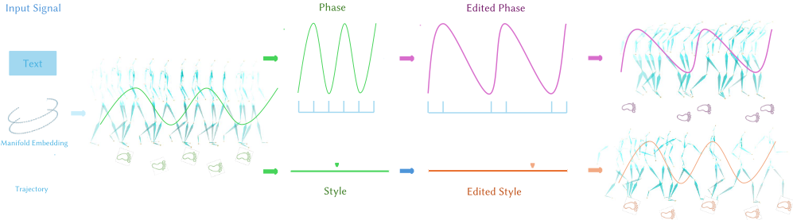
Abstract
We introduce stylized phase manifolds-a compact, interpretable latent representation that disentangles motion content (e.g. "jumping", "walking"), the temporal structure (e.g. motion cycle frequency, gait timing), and style (i.e. how the motion is performed). Learned in an unsupervised manner and inherently low-dimensional, the manifold offers intuitive and flexible editing. Building on this representation, we develop a diffusion-based motion generator that enables fine-grained control over semantic, temporal, and stylistic aspects of motion. To connect high-level intent with low-level motion, we treat the stylized manifold as an intermediate representation-a structured bridge between natural language and motion. By first mapping text into this manifold, our two-stage pipeline improves the control over for text-based motion generation, while producing high-quality, diverse motion outputs.
CCS Concepts
· Computing methodologies → Animation; Machine learning; Procedural animation;
1. Introduction
Understanding and synthesizing human motion remains a central challenge in computer graphics. Motion generation methods often face a trade-off between high-level expressiveness and low-level control. Interactive systems driven by a time series of user inputs, such as joysticks or trajectory guidance, are effective for producing precise and reactive movements, especially when control over timing, direction, or contact is important. However, they generally lack the ability to express complex intent or semantic variation. On the other hand, text-to-motion models offer a flexible way to generate motion from high-level descriptions, making them useful for authoring purposes. But these models tend to be limited in terms of controllability, struggling to produce motion that aligns with specific timing or frame-level details. This gap between semantic-level input and low-level control remains a challenge in motion synthesis for more flexible and practical motion generation systems.
Recently, Li et al. [LSYS24] introduced a compact phase manifold for motion abstraction that enables control over the generated motion, representing motion as a collection of small circles embedded in a high-dimensional space. Each circle corresponds to a semantically consistent motion type (e.g., walking, running), and each point along the circle represents the phase of that cyclic motion. Unlike traditional approaches that model phase in a rigid or task-specific manner, this formulation provides a compact, interpretable and unsupervised motion abstraction that balances fine-grained controllability with ease of composition. However, this discrete manifold structure, while powerful for aligning and organizing motion types across datasets, is inherently limited in expressiveness. Specifically, it lacks the capacity to capture motion style, a critical aspect of nuanced human movement. The boundary between content and style is not always clear in many contexts and is usually learned with labels. We take a structural perspective to address this issue: we define style as a continuous, temporally invariant attribute of motion: it remains stable within a given motion sequence but varies smoothly across different instances. We then integrate this structural definition of style into an extension of the phase manifold, incorporating a continuous style dimension, resulting in what we call stylized phase manifold. This extension enables a richer representation that jointly encodes what the motion is (via phase/category) and how it is performed (via style).
Building on this stylized manifold, we develop a novel diffusion-based motion generation model conditioned on these structured embeddings. Our model enables explicit and disentangled control over both the semantic content, such as "jumping" and "running", the timing, such as the frequency or foot contact time of a running cycle, and when exactly one action starts, as well as the stylistic qualities of the generated motion. The discrete phase component describes the temporal and categorical intent, while the continuous style component allows nuanced variation within the same motion type. Importantly, the compactness and structure of the manifold make it suitable for authoring control signals either manually or through learned mappings, enabling both precise control and scalable generation.
While recent text-to-motion systems offer an intuitive interface for motion synthesis via natural language [GZZ*22b; TRG*23], making them well-suited for authoring and prototyping thanks to their ability to capture high-level semantics, they often function as end-to-end black boxes, providing limited control over temporal structure, motion type or expressive style. These limitations significantly constrain their utility in many practical applications. To address this, we propose a novel intermediate representation: instead of mapping text directly to motion, as is common in prior work, we first map it into our stylized phase manifold. This intermediate space serves as a semantically meaningful and manipulable latent representation, allowing users to explicitly control timing, style and motion semantics prior to final motion synthesis. This separation between interpretation and generation not only enhances control, but also improves interpretability, modularity and editability in text-driven motion pipelines.
Our primary contributions are as follows:
· Stylized phase manifold: We introduce a compact and interpretable latent representation that extends the phase manifold with a continuous style dimension. This enables the modeling of both temporal phase and expressive style in a unified space. The proposed manifold is learned in an unsupervised fashion and generalizes across a wide range of motion types, supporting scalable and adaptable motion authoring workflows.
· Diffusion-based motion generator: We develop a motion synthesis model conditioned on the stylized phase manifold, allowing disentangled control over semantic content (e.g., motion type), timing (e.g., motion frequency and length) and stylistic variation.
· Text-to-manifold interface: We propose a two-stage generation pipeline that maps natural language to the stylized phase manifold before motion synthesis, enabling structured, interpretable and editable motion control from text. Our manifold supports intuitive editing operations, such as adjusting timing, style modulation and semantic refinement, directly within the latent space and prior to motion generation.
We conduct extensive experiments demonstrating a variety of editing tasks, including timing adjustments, stylistic alterations and semantic refinements, performed directly within the manifold. These results showcase the fine-grained control and expressiveness enabled by our approach, while the high fidelity of the synthesized motion highlights its robustness and practical utility.
2. Related work
2.1. Motion clustering and stylization
A well-structured organization of motion data significantly simplifies many motion-related tasks. Early successful approaches include motion graphs [KGP02; AF02], which model motion as a graph structure where nodes represent distinct motion states and edges denote feasible transitions. This representation enables interactive character control by allowing users to navigate the motion space through graph traversal driven by input signals. In contrast, motion fields [LWB*10] adopt a continuous representation by learning a motion field over a database of motions, enabling character control through reinforcement learning. Aristidou et al. [ACH*18] learn a space for motion by encoding motion words-small segments of motion-with triplet loss. More recently, the emergence of tokenized motion representations [GWW*23] has enabled scalable composition and editing, including text-driven motion synthesis [ZZC*23], integration with physics-based simulation [YSZ*24] and language-driven applications [FLD*24].
Among the works most closely related to ours, phase representations have been used as a powerful way to organize and control motion, first introduced in a deep learning context by Holden et al. [HKS17]. DeepPhase [SMK22] encodes motion into a multichannel periodic latent space, enabling flexible phase-aligned control. WalkTheDog [LSYS24] further advances this idea by combining tokenization with a 1D disconnected phase manifold, which disentangles semantics and timing for unsupervised motion alignment. Their design prioritizes compactness and generalization across characters, which leads to insufficient expressiveness of the latent space.
While Li et al. [LSYS24] focus on aligning motion across characters through a compact phase manifold, their model does not account for stylistic variation-an essential component of expressive human motion. In this direction, numerous works have investigated motion stylization. Early efforts like Xia et al. [XWCH15] apply supervised learning to transfer motion style when explicit labels are available for both style and content. Aberman et al. [AWL*20] relax this requirement, enabling unpaired style transfer from both 3D motion data and video. Jang et al. [JPL22] introduce part-wise stylization, allowing different body segments to adopt different styles, and MOCHA [JYWL23] advances this further to enable real-time online character-specific transfer.
To extend its expressiveness while incorporating styles, we extend the phase manifold of Li et al. [LSYS24] by incorporating an additional continuous style dimension, also learned in an unsupervised manner, enabling fine-grained, disentangled control over motion semantics, timing and style. This stylized manifold serves as the backbone of our motion generation pipeline.
2.2. Phase-conditioned motion synthesis and diffusion models
Several works explore motion generation conditioned on user-driven phase inputs [HKS17; SMK22; LSYS24]. These approaches typically rely on motion matching or autoregressive models to predict the next latent embedding in a periodic manifold. However, due to the inherently one-to-many nature of the mapping from phase to motion, such methods often produce averaged or overly likely poses, resulting in discontinuities or limited diversity in the synthesized motion.
With the rise of diffusion models [HJA20], Tevet et al. [TRG*23] demonstrate their potential for text-to-motion generation. Subsequent works [CJL*23; BEP23] improve efficiency and realism by operating in latent space rather than directly in motion space. Most existing text-conditioned diffusion models [TRG*23; ZCP*24; CJL*23; LCH*25] adopt Transformer-based denoisers [VSP*17], while others [HYL*24] use U-Net architectures augmented with cross-attention. However, both approaches typically require fixed-length inputs or incur high computational costs due to quadratic attention complexity. Although recent variants (e.g., [ZCP*24]) mitigate this with linear attention, the improvement comes at the expense of increased architectural complexity. In contrast, we employ a lightweight, fully convolutional vanilla U-Net with adaptive group normalization (AdaGN) [DN21], which supports flexible sequence lengths and scales efficiently to long motions.
While generating motion directly from text is attractive, this approach often lacks fine-grained control. To enhance controllability, Karunratanakul et al. [KPST23] suggest conditioning the motion diffusion model on the trajectory and further extend it to editing the generated motion with constraints via optimization [KPA*24]. However, editing via optimization comes at high computational cost. Xie et al. [XJZ*23] offers a unified control interface with high-level text and low-level joint trajectories through spatial guidance. Some approaches [BEP24; LCH*25] inject textual embeddings in every frame to enable frame-level control, but struggle to express precise timing (e.g., walk cycle speed). Our phase manifold addresses this by enabling intuitive, fine-grained timing control that is easy to author. Jiang et al. [JCL25] further constrain motion generation using a motion "phrase" representation [LLZ*24], capturing low-level joint rotations learned from text. However, such mid-level features are not directly editable by humans. In contrast, our stylized manifold remains compact and interpretable, supporting direct and intuitive manipulation.

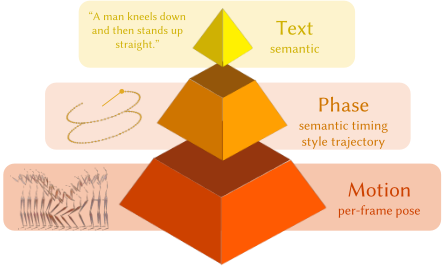
Regarding style, Hu et al. [HZY*24] adapt a pretrained diffusion model to a specific style sequence by fine-tuning, while Zhong et al. [ZXJ*24] inject style signals directly during sampling. Our model differs by learning to disentangle style and content in an unsupervised manner, enabling users to control how a motion is performed-across different styles-without requiring additional supervision or fine-tuning.
3. Method
In this section, we introduce our stylized phase manifold and how to utilize it as a bridge between motion and text, as shown in Figure 2. We first describe our motion representation, then the stylized phase manifold formed by our autoencoder. Once the manifold of each frame is learned, we use it to train a phase-conditioned motion diffusion model. When the motion dataset used for training is annotated with text, we describe the training of the text-conditioned phase generation network, which completes the pipeline of text-phase-motion as in Figure 4.
3.1. Motion representation
For a motion sequence X of N frames, we represent it with root trajectories r 1:N ∈R N×4 and local poses x 1:N ∈R N×JD , where J is the number of joints and D is the number of features per joint. The root trajectory consists of the pelvis's projected 2D position and heading on the ground plane, which define a local coordinate system for each frame. We parameterize this trajectory as the relative transformation from the previous frame's coordinate system. For local poses, we use joint rotations, positions, and velocities, all represented in the root trajectory's coordinate frame.
3.2. Stylized phase manifold
Li et al. [LSYS24] propose a compact phase manifold used to align different datasets. In their 1D manifold, motions are effectively decomposed into a categorical choice of content and a 1D cyclic timing variable. While effective for locomotion, such low-dimensional embeddings struggle to represent stylized and dynamic motions due to their limited capacity. One important missing ingredient is style.
The boundary between motion content and style is often ambiguous and context-dependent, making it difficult to define in a consistent way. Rather than relying on predefined labels or heuristics, we approach this challenge from a structural perspective. We treat style as a continuous, locally temporally invariant attribute: it remains stable within a short motion sequence but can vary smoothly across instances, such as in transitions from walking happily to walking sadly. In contrast, content reflects discrete semantic categories like walking, running, or jumping. Building on this view, we propose a stylized phase manifold that augments the phase embedding with a continuous style variable. We show that without requiring explicit supervision, this representation leads to a separation of style and content that aligns with human perception.
The stylized manifold M is constructed as a Cartesian product of the phase embedding p ∈ R d and a continuous style code s ∈ [0, 1]. We follow the parameterization of the phase embedding of Li et al. [LSYS24]:

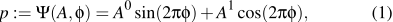
where A 0 and A 1 are the first and second halves of the amplitude vector A ∈ R 2d , respectively. For a given A, the trajectory of p with varying φ traces an ellipse in R d . The amplitude vectors are constrained to lie within a discrete codebook A ⊂ R2d of fixed size K, corresponding to the categorical nature of motion semantics.
Formally, the stylized phase manifold is then defined as:

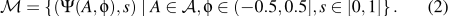
For each frame i, we denote its stylized manifold embedding as m i = (p i ,s i ) ∈M, where p i is the phase embedding and s i is the style code. For a motion sequence of N frames, we write the corresponding manifold embedding sequence as m 1:N = {m i }N i=1. Geometrically, our manifold can be interpreted as the lateral surface of a high-dimensional elliptical cylinder, where s controls the height (i.e., style) and p specifies a position along the elliptical contour. Stylized motions sharing the same semantics are mapped onto the same elliptical surface, enabling structured, continuous, and semantically meaningful motion representations.
3.3. Learning the stylized phase manifold
Li et al. [LSYS24] introduce a vector-quantized periodic autoencoder (VQ-PAE) to learn the phase manifold in an unsupervised manner, combining vector quantization [VV*17] with DeepPhase [SMK22]. The key insight of their manifold design is captured by two properties: phase linearity and amplitude constancy. These enable reconstruction by predicting only the amplitude and phase of the pivot frame, then extrapolating to the full sequence. We refer the readers to the work of Li et al. [LSYS24] for further details of VQ-PAEs.
A central challenge in learning the stylized phase manifold is determining where and how to incorporate style. Based on the assumption that style is continuous yet locally time-invariant, we enforce a property of style constancy over short motion sequences. To this end, we predict a style code alongside the amplitude, bypassing the vector quantization layer, as illustrated in Figure 3.
In VQ-PAE, temporal average pooling is used to collapse the time axis of the latent representation after convolution. However, we find that this design impedes the learning of consistent amplitude within a window. Since the average can shift depending on the local phase, especially in long sequences, it interferes with the enforcement of amplitude constancy. This issue is further exacerbated in stylized motions: average pooling can separate semantically similar actions due to style-driven variations in motion magnitude (e.g., walking proudly vs. walking sadly), as demonstrated in Section 4.6.
To address this limitation, we replace average pooling with a Gram matrix [GEB15] computed over the convolutional latent embeddings. While average pooling aggregates features uniformly, the Gram matrix captures inter-channel correlations, which are more robust to phase shifts and style variation. Our intuition is that motions with the same semantics often exhibit similar coordinated body part movements (e.g., raising the right arm while lifting the left foot), which are well encoded by the Gram matrix G ∈ RC×C :

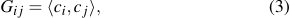
where ci and c j denote latent features across channels and ⟨·, ·⟩ is the inner product. By replacing average pooling with this more expressive and structure-aware operation, we are able to achieve improved semantic clustering and clearer disentanglement between content and style.
Given an input motion X with N frames, our method predict the amplitude ˜A, vector-quantized amplitude A, style code s, pivot frequency f and pivot phase φ.
We then extrapolate the pivot phase φ to the entire temporal window, and calculate the phase embeddings with Equation (1). The convolutional decoder predict the reconstructed motion ˜X from the phase embeddings. We learn our stylized phase manifold with a reconstruction loss:

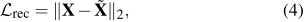
and a vector quantization loss:

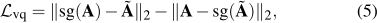
where sg(·) is the stop gradient operator. The total loss for the learning is

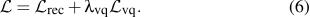
We show in Section 4.2 that the learned manifold achieves semantics and timing alignment, content style disentanglement at the same time, based on the structural design without any supervision.
Once the stylized manifold embedding is obtained via the autoencoder, we discard the autoencoder and retain only the manifold representation. Although the autoencoder cannot fully reconstruct the original motion, due to the lower dimensionality of the manifold compared to the full motion space, the resulting embedding remains compact and highly controllable. This makes the embedding a practical conditioning signal for motion synthesis-compact enough to be easily authored, yet expressive enough to capture the key properties of the target motion.
![Figure 3: The original motion sequence is first processed by a convolutional neural network to obtain a latent representation. This latent representation is then passed to two components: a timing branch and a Gram matrix computation module. In the timing branch, a convolutional layer further compresses the latent into a 1-channel signal, from which the average frequency and pivot frame phase are estimated using FFT. The amplitude is obtained via a nearest-neighbor search in a predefined codebook. Using the estimated frequency, phase, and amplitude, we extrapolate the phase embedding from the pivot frame to the entire sequence. Finally, a convolutional decoder reconstructs the full motion sequence.](assets/0071-picture.png)

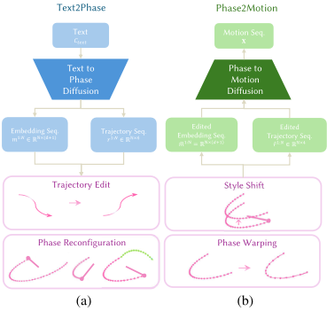
3.4. Phase-conditioned motion diffusion
While the stylized phase manifold offers unsupervised and interpretable control over motion semantics, style, and timing, recombining these factors into coherent and temporally aligned motion remains challenging due to the inherently one-to-many nature of the phase-to-motion mapping. To address this, we introduce a phase-conditioned diffusion model that employs the manifold as a control signal, enabling fine-grained generation with both semantic and temporal fidelity, as shown in Figure 4(b). Supporting variable-length motion generation is essential in our framework, as the phase manifold allows intuitive edits such as changing frequency, repeating, deleting, or reordering segments to control motion structure and duration. To accommodate this flexibility, we adopt a lightweight, fully convolutional vanilla U-Net with adaptive Group Normalization (AdaGN) [DN21] as our denoising backbone.
A diffusion process models data generation as a Markovian sequence of noising and denoising steps [HJA20]. Given any temporal sequence s 1:N 0 , noise is progressively added as:

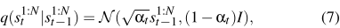
where αt is a fixed hyperparameter controlling the noise schedule. After T steps, the noised input s 1:N T approximates a standard Gaussian distribution N(0, I). The denoising model is then trained to recover the original sequence s0 from sT . Following Ramesh et al. [RDN*22], we directly predict s 1:N 0 instead of the noise term ϵt , as in Ho et al. [HJA20].
To enhance visual plausibility, we also incorporate an additional foot contact label prediction. Let f i ∈ {0,1}Jf be the binary ground-truth mask indicating whether each foot joint is in contact with the ground at frame i, and Jf indicates the number of foot joints. For a motion sequence X = {x 1:N ,r 1:N }, where x 1:N and r 1:N denotes local poses and global root trajectory, respectively. We concatenate them together as the network prediction objective O={x 1:N , r 1:N , f 1:N }. We adopt a reconstruction-based loss for the representation. Specifically, the model learns to denoise corrupted motion Ot from Equation (7) through the following loss terms:

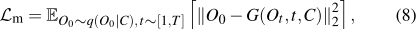
where C = {m 1:N , r 1:N } is the combined condition signal consisting of phase embeddings and root trajectories. To support unconditioned generation, the root trajectory in C can be masked and replaced with a learned embedding. In our implementation, the per-frame signal C is concatenated to Ot and fed into our denoising network.
We also incorporate the sliding loss [SAA*20] for precise foot locking. After obtaining the network predictions, we then calculate the predicted foot velocities v0 from the predicted local poses ˆ x0 and the root trajectories ˆ r0. The following loss is used to encouraging low velocity at contact points and accurate contact prediction for the predicted contact label ˆ f0:

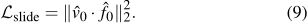
Our final training objective combines all two losses:

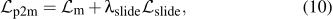
where λslide is the weighting coefficient for the sliding loss. We also provide an ablation on the sliding loss in Appendix C, showing that it improves root trajectory accuracy and reduces foot contact error.
3.5. Text to motion via phase
While recent text-to-motion models have made impressive progress, most still lack fine-grained control over timing, structure, or style. With the stylized manifold and motion diffusion model in place, we now introduce the final piece of our framework: a text-to-phase module that bridges high-level language and structured, editable control signals, as depicted in Figure 4(a).
We train a diffusion model that is conditioned on motion text description Ctext, and predicts a manifold embedding sequence m 1:N = {p 1:N ,s 1:N }, including both phase embedding p 1:N and style code s 1:N . In addition, our model also predicts root trajectories in global coordinates r 1:N ∈ RN×4 . We adopt the same lightweight vanilla U-Net as in our main diffusion model. The text embedding is extracted using a pretrained CLIP model [RKH*21] and concatenated to the corrupted manifold embeddings as input to the U-Net. Rather than directly regressing p i , we model the phase embedding as a structured prediction problem. Specifically, we predict a one-hot vector identifying the choice of entries in the codebook A of the phase manifold M, along with a continuous angle φi , then p i can be calculated using Equation (1).
The model is trained using a simple denoising objective:

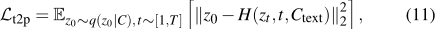
where z = {m, r} denotes the joint representation of manifold embeddings and root trajectories, zt is the corrupted sample at timestep t, and H is the U-Net conditioned on Ctext.

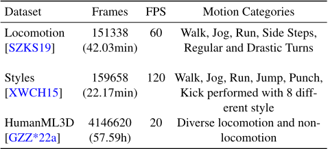
Recognized table text (check against the image)
| Dataset | Frames | FPS | Motion Categories |
|---|---|---|---|
| Locomotion [SZKS19] | 151338 (42.03min) | 60 | Walk, Jog, Run, Side Steps, Regular and Drastic Turns |
| Styles [XWCH15] | 159658 (22.17min) | 120 | Walk, Jog, Run, Jump, Punch, Kick performed with 8 different style |
| HumanML3D [GZZ*22a] | 4146620 (57.59h) | 20 | Diverse locomotion and non-locomotion |
4. Experiments
4.1. Implementation details
4.1.1. Dataset
We construct our stylized phase embeddings and phase-conditioned motion diffusion model using several datasets (see Table 1), which together cover a wide range of motion types and dataset sizes. Furthermore, we evaluate our text-conditioned phase generation model on the HumanML3D dataset using the textual annotations from Guo et al. [GZZ*22a]. For HumanML3D, we follow their official train/test split. For the other datasets, we divide the motion sequences into training and testing sets using a 9:1 ratio based on randomly sampled sequences. For the phase-conditioned motion diffusion training, we apply a sliding window of length t1, while for testing we use a longer window of length t2 (where t2 > t1), demonstrating that our fully convolutional U-Net can support motion sequences of arbitrary length.
4.1.2. Training
Our manifold learning and diffusion models are trained using the Adam optimizer [KB14] with learning rates of 1×10-3 and 1× 10-4 , respectively. During the training of the phase-conditioned motion diffusion model, we introduce trainable mask parameters over the trajectory, phase embeddings, and style codes. Each conditioning signal is randomly masked with a probability of 10% to encourage robustness against missing or corrupted conditioning inputs. Given a prediction objective sequence O = {x 1:N , r 1:N , f 1:N }, we apply normalization only on the local poses x 1:N .
Our manifold learning model is trained on a single NVIDIA GeForce RTX 1080 Ti GPU for one day. Subsequently, we train both the phase-conditioned motion generation and the text-conditioned phase generation modules for three days each on the same hardware respectively. The diffusion model is trained with T = 100 denoising steps using a cosine noise schedule [TRG*23]. Additional architectural details are provided in Section A. Additional ablations on the phase manifold hyper-parameters, including codebook size, ambient manifold dimension, and style dimension, are provided in Appendix D.

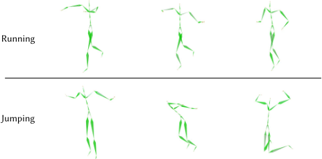

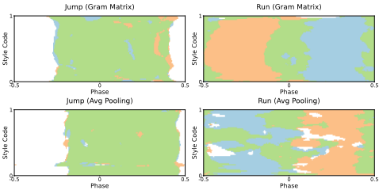
4.2. Average poses of the stylized phase manifold
To inspect the manifold semantics, following Li et al. [LSYS24], we use an MLP to decode stylized embeddings mi = {pi, si} into poses. Due to the one-to-many mapping, the deterministic MLP predicts the average local pose xi, capturing both semantics and style.
We examine the style-semantics entanglement of our stylized phase manifold based on the avg pose results. Figure 5 shows the average pose on the run and jump manifolds with different style code s from the Style dataset [XWCH15]. Because we disentangle the style code without supervision, it does not carry an explicit semantic meaning. Instead, it provides a continuous transition across motion styles. Since directly measuring semantic consistency when varying the style code is difficult, we opt to show the consistency with foot contact, which demonstrates the temporal alignment and partially reflects the content. As shown in Figure 6, our manifold effectively captures synchronized motions, demonstrating that motions with similar semantic content are grouped together while styles are disentangled. The smooth transitions along both the phase and style dimensions allow us to reconfigure motions via phase warping and style shifting, as described in Section 4.4.

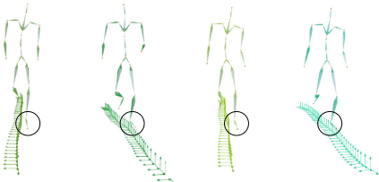

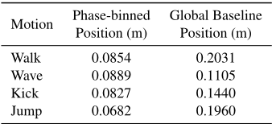
Recognized table text (check against the image)
| Motion | Phase-binned Position (m) | Global Baseline Position (m) |
|---|---|---|
| Walk | 0.0854 | 0.2031 |
| Wave | 0.0889 | 0.1105 |
| Kick | 0.0827 | 0.1440 |
| Jump | 0.0682 | 0.1960 |
4.3. Phase-conditioned motion generation
Our phased-conditioned diffusion model can synthesize diverse motions from the same manifold embedding sequences M, demonstrating temporal and stylistic synchronization across different sampling runs as shown in Figure 7.
4.3.1. Motion-phase alignment
To further evaluate motion-phase alignment, we uniformly sample phase pi with a constant frequency f0 = 1.25 Hz, starting from p0 = -0.5, while fixing the style si = 0.5. For each sampled embedding, we generate motion sequences and partition frames into 16 discrete phase bins over the normalized phase domain [-0.5,0.5]. Within each bin, we compute the pairwise average Euclidean distance of all joints across generated motions, and then average these values across bins to obtain a measure of motion consistency. As a baseline, we also compute the pairwise average joint distance over the entire motion sequence without binning. Comparing the baseline with the phase-binned results shows that our phase variable effectively controls motion content and enforces temporal consistency, as reported in Table 2.

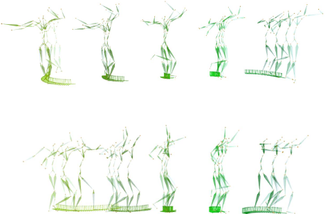

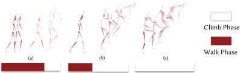
4.3.2. Trajectory control
When conditioned on different user-defined trajectories but the same manifold sequence, the model generates motions that aligns with the specified trajectory while preserving the underlying temporal semantics, as shown in Figure 8. We follow the evaluation protocol of Guo et al. [GZZ*22b] and Xie et al. [XJZ*23] and report results in Table 3. For both phase2motion and text2motion, we follow prior settings and use the ground-truth trajectory as condition to measure the control accuracy. Notably, our method achieves performance comparable to existing models, with various controllability for the generated motion. Furthermore, our method can synthesize novel motions by combining known phase embeddings with unseen trajectories, enabling realistic motion generation that preserves both the content and style of the original manifold embedding. We refer the readers to the accompanying video for a detailed demonstration.
4.4. Phase and style editing
4.4.1. Reconfiguration
Our phase-based representation supports intuitive and flexible motion reconfiguration through manifold-level editing operations (see Figure 9). Given a sequence of stylized manifold embeddings M = {mi = (pi, si)}N i=1, users can apply sequence-level operations such as concatenation, repetition, deletion, and permutation to reconfigure motion. Since each embedding mi encodes localized temporal semantics and stylistic features, such edits preserve coherence throughout the sequence.

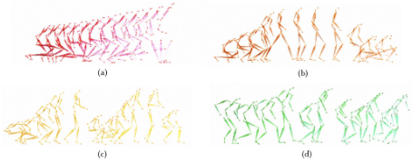
4.4.2. Phase warping
At a finer temporal scale, our model supports phase warping. By fixing an amplitude from the codebook A and varying the frequency f of a constantly increasing phase variable φ, the system can compress or stretch motion cycles, effectively slowing down or speeding up actions with minimal impact on the underlying motion semantics. This frequency-aware design enables fine-grained retiming while maintaining temporal consistency, as demonstrated in Figure 10.
In addition, we analyze the impact of phase-warping through foot contact distributions in Table 4. Specifically, for each motion semantics, we chose a frequency fφ such that lies with in the data distribution without producing unnatural results. We then construct different manifold sequences starting from p0 = -0.5 while fixing the style si = 0.5, with frequency varying in [0.5 fφ, 1.5 fφ]. We then evaluate how the frequency scaling affects the phase-aligned distributions of left (L) and right (R) foot contacts. It can be observed that, under varying frequencies, the phase distribution during foot contact remains largely consistent, demonstrating the effectiveness of phase warping.
4.4.3. Style shift
By interpolating the style code s while fixing the phase embeddings on our stylized manifolds, we generate stylistic variations of the same motion type, learned in an unsupervised manner from the dataset. In the HumanML3D dataset, where no explicit style labels are provided, our model automatically discovers interpretable styles, such as arching or straightening the back, to control motion (see Figure 11). This continuous style control allows nuanced expression, such as gradually shifting from a neutral to an exaggerated or expressive gait, while maintaining temporal and semantic alignment.
Moreover, we construct the aforementioned constant-frequency manifold while varying the style code within the range [0.3,0.7] to introduce stylistic variation. Notably, this modulation of stylistic parameters does not significantly alter the underlying foot contacts distributions, as shown in Table 4, confirming that style variation influences only the expressive characteristics of motion without interfering with its fundamental phase-dependent contact structure.

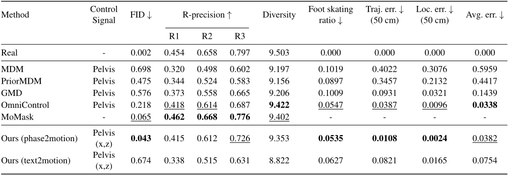
Recognized table text (check against the image)
| Method | Control Signal | FID ↓ | R-precision ↑ | Diversity | Foot skating ratio ↓ | Traj. err. ↓ (50 cm) | Loc. err. ↓ (50 cm) | Avg. err. ↓ | ||
|---|---|---|---|---|---|---|---|---|---|---|
| R1 | R2 | R3 | ||||||||
| Real | - | 0.002 | 0.454 | 0.658 | 0.797 | 9.503 | 0.000 | 0.000 | 0.000 | 0.000 |
| MDM | Pelvis | 0.698 | 0.320 | 0.498 | 0.602 | 9.197 | 0.1019 | 0.4022 | 0.3076 | 0.5959 |
| PriorMDM | Pelvis | 0.475 | 0.344 | 0.524 | 0.583 | 9.156 | 0.0897 | 0.3457 | 0.2132 | 0.4417 |
| GMD | Pelvis | 0.576 | 0.373 | 0.558 | 0.665 | 9.206 | 0.1009 | 0.0931 | 0.0321 | 0.1439 |
| OmniControl | Pelvis | 0.218 | 0.418 | 0.614 | 0.687 | 9.422 | 0.0547 | 0.0387 | 0.0096 | 0.0338 |
| MoMask | - | 0.065 | 0.462 | 0.668 | 0.776 | 9.402 | - | - | - | - |
| Ours (phase2motion) | Pelvis (x,z) | 0.043 | 0.415 | 0.612 | 0.726 | 9.353 | 0.0535 | 0.0108 | 0.0024 | 0.0382 |
| Ours (text2motion) | Pelvis (x,z) | 0.674 | 0.338 | 0.515 | 0.631 | 8.822 | 0.0627 | 0.0821 | 0.0165 | 0.0754 |

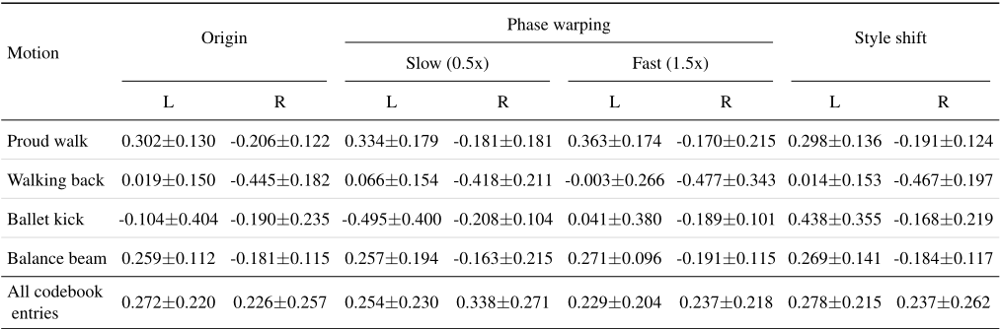
Recognized table text (check against the image)
| Motion | Origin | Phase warping | Style shift | |||||
|---|---|---|---|---|---|---|---|---|
| Slow (0.5×) | Fast (1.5×) | |||||||
| L | R | L | R | L | R | L | R | |
| Proud walk | 0.302±0.130 | -0.206±0.122 | 0.334±0.179 | -0.181±0.181 | 0.363±0.174 | -0.170±0.215 | 0.298±0.136 | -0.191±0.124 |
| Walking back | 0.019±0.150 | -0.445±0.182 | 0.066±0.154 | -0.418±0.211 | -0.003±0.266 | -0.477±0.343 | 0.014±0.153 | -0.467±0.197 |
| Ballet kick | -0.104±0.404 | -0.190±0.235 | -0.495±0.400 | -0.208±0.104 | 0.041±0.380 | -0.189±0.101 | 0.438±0.355 | -0.168±0.219 |
| Balance beam | 0.259±0.112 | -0.181±0.115 | 0.257±0.194 | -0.163±0.215 | 0.271±0.096 | -0.191±0.115 | 0.269±0.141 | -0.184±0.117 |
| All codebook entries | 0.272±0.220 | 0.226±0.257 | 0.254±0.230 | 0.338±0.271 | 0.229±0.204 | 0.237±0.218 | 0.278±0.215 | 0.237±0.262 |
4.5. Text-conditioned phase generation
Our model enables realistic and diverse motion synthesis from a single text prompt through a two-stage pipeline: text-to-phase, followed by phase-to-motion. Text prompts are translated into a sequence of control signals on the stylized manifold and corresponding root trajectories, allowing for disentangled and interpretable motion generation, as illustrated in Figure 4.
Once the motion is synthesized, users can interactively edit the trajectory (Section 4.3) or adjust temporal structure through phase-based controls (Section 4.4). The phase representation naturally supports phase editing and style shift, offering precise control over motion dynamics without compromising semantic integrity.
We compare our method to FlowMDM [BEP24] and Unimotion [LCH*25], which focus on fine-grained text-conditioned motion. It can be seen that our approach achieves accurate trajectory and timing control, while offering greater stylistic flexibility through disentangled phase and style codes, as shown in Figure 12. The quantitative comparisons with motion control methods in Table 3 further validate these advantages. We follow the OmniControl [XJZ*23] protocol and report trajectory error as the ratio of sequences with at least one controlled keyframe exceeding the distance threshold, location error as the ratio of controlled keyframes exceeding the threshold, and average error as the mean Euclidean distance between generated and target keyframe joint locations; lower is better for all metrics. Since MoMask [GMJ*24] is not designed for controlled-joint generation, these control-specific metrics are not applicable to MoMask, and thus we do not report its evaluation under this setting.

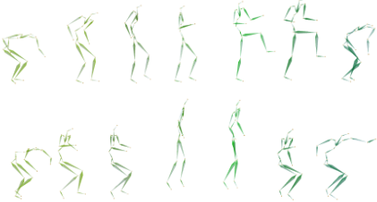

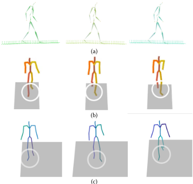
4.6. Ablation study
We study the impact of the Gram matrix representation in our method. We compare two style representations for constructing stylized phase embeddings: average pooling and Gram matrix encoding. While average pooling tends to collapse distinct motion features into identical amplitude A, leading to semantic drift when varying the style code s, the Gram matrix preserves second-order statistics and maintains consistent motion semantics. We train both variants and observe that only the Gram-based embedding reliably disentangles style from content during phase-conditioned motion synthesis. Figure 6 shows that average pooling may cluster semantically different motions into a single manifold, resulting in inconsistent foot contact alignment. Please refer to the accompanying video for a detailed example.
5. Discussion
In this work, we introduce a stylized phase manifold that combines a discrete phase with a continuous style axis to create an interpretable latent space for motion. A diffusion generator conditioned on this space supports independent control of what action occurs, when and how it is performed. By inserting a text-to-manifold step, natural-language prompts become editable control signals before synthesis, enabling precise timing, stylistic variation, and semantic refinement. Experiments confirm high-fidelity motion and flexible editing, suggesting that structured manifolds are useful intermediate control layers for the evaluated motion-generation settings.
The interpretability of our approach comes from imposing a compact structure on the motion latent space, but this structure also constrains what the manifold can represent. Our stylized phase manifold should therefore not be interpreted as a general-purpose representation for all text-to-motion tasks. Because it factorizes motion into phase/category and a 1D style code, it may not adequately capture motions with rich object interactions, humanhuman contacts, or highly non-periodic temporal structure. Extending the representation to broader motion spaces remains future work.
A complementary limitation is that our method provides limited fine-grained control over the trajectories of individual joints. While our model enables high-level, intuitive motion control, this limitation can impact applications requiring precise human-scene or human-human interaction, where joint-level accuracy is critical. Another promising direction for future work involves exploring alternative topologies for the style representation. Currently, we employ a 1D segment to encode style, which, while compact and effective for disentanglement, may constrain the expressiveness of stylistic variations. Investigating more expressive structures-such as circular or 2D topologies-could enhance style representation while preserving the unsupervised disentanglement properties of our manifold.
Acknowledgements
This work was supported in part by the European Research Council (ERC) under the European Union's Horizon 2020 Research and Innovation Programme (ERC Consolidator Grant, agreement No. 101003104, MYCLOTH) and by the EU Commission's Horizon Europe program (grant No. 101178362). Open access publishing facilitated by ETH Zurich, as part of the Wiley-ETH Zurich agreement via the Consortium Of Swiss Academic Libraries.
References
[ACH*18] ARISTIDOU, ANDREAS, COHEN-OR, DANIEL, HODGINS, JESSICA K, et al. "Deep motifs and motion signatures". ACM Trans. Graph. 37.6 (2018), 1-13 2.
[AF02] ARIKAN, OKAN and FORSYTH, DAVID A. "Interactive motion generation from examples". ACM Trans. Graph. 21.3 (2002), 483-490 2.
[AWL*20] ABERMAN, KFIR, WENG, YIJIA, LISCHINSKI, DANI, et al. "Unpaired motion style transfer from video to animation". ACM Trans. Graph. 39.4 (2020), 64-1 3.
[BEP23] BARQUERO, GERMAN, ESCALERA, SERGIO, and PALMERO, CRISTINA. "Belfusion: Latent diffusion for behavior-driven human motion prediction". Proceedings of the IEEE/CVF International Conference on Computer Vision. 2023, 2317-2327 3.
[BEP24] BARQUERO, GERMAN, ESCALERA, SERGIO, and PALMERO, CRISTINA. "Seamless human motion composition with blended positional encodings". Proceedings of the IEEE/CVF Conference on Computer Vision and Pattern Recognition. 2024, 457-469 3, 9, 10.
[CJL*23] CHEN, XIN, JIANG, BIAO, LIU, WEN, et al. "Executing your commands via motion diffusion in latent space". Proceedings of the IEEE/CVF conference on computer vision and pattern recognition. 2023, 18000-18010 3.
[DN21] DHARIWAL, PRAFULLA and NICHOL, ALEXANDER. "Diffusion models beat gans on image synthesis". Advances in neural information processing systems 34 (2021), 8780-8794 3, 5.
[FLD*24] FENG, YAO, LIN, JING, DWIVEDI, SAI KUMAR, et al. "Chatpose: Chatting about 3d human pose". Proceedings of the IEEE/CVF conference on computer vision and pattern recognition. 2024, 2093–2103 2.
[GEB15] GATYS, LEON A, ECKER, ALEXANDER S, and BETHGE, MATTHIAS. "A neural algorithm of artistic style". arXiv preprint arXiv:1508.06576 (2015) 4.
[GMJ*24] GUO, CHUAN, MU, YUXUAN, JAVED, MUHAMMAD GOHAR, et al. "Momask: Generative masked modeling of 3d human motions". Proceedings of the IEEE/CVF Conference on Computer Vision and Pattern Recognition. 2024, 1900-1910 9.
[GWW*23] GENG, ZIGANG, WANG, CHUNYU, WEI, YIXUAN, et al. "Human Pose as Compositional Tokens". Proceedings of the IEEE/CVF Conference on Computer Vision and Pattern Recognition. 2023, 660–671 2.
[GZZ*22a] GUO, CHUAN, ZOU, SHIHAO, ZUO, XINXIN, et al. "Generating Diverse and Natural 3D Human Motions From Text". Proceedings of the IEEE/CVF Conference on Computer Vision and Pattern Recognition (CVPR). June 2022, 5152-5161 6.
[GZZ*22b] GUO, CHUAN, ZOU, SHIHAO, ZUO, XINXIN, et al. "Generating diverse and natural 3d human motions from text". Proceedings of the IEEE/CVF conference on computer vision and pattern recognition. 2022, 5152-5161 2, 8.
[HJA20] HO, JONATHAN, JAIN, AJAY, and ABBEEL, PIETER. "Denoising diffusion probabilistic models". Advances in neural information processing systems 33 (2020), 6840-6851 3, 5, 12.
[HKS17] HOLDEN, DANIEL, KOMURA, TAKU, and SAITO, JUN. "Phase-functioned neural networks for character control". ACM Trans. Graph. 36.4 (2017), 1-13 2, 3.
[HYL*24] HUANG, YIHENG, YANG, HUI, LUO, CHUANCHEN, et al. "Stablemofusion: Towards robust and efficient diffusion-based motion generation framework". Proceedings of the 32nd ACM International Conference on Multimedia. 2024, 224-232 3, 12.
[HZY*24] HU, LEI, ZHANG, ZIHAO, YE, YONGJING, et al. "Diffusion-based Human Motion Style Transfer with Semantic Guidance". Computer Graphics Forum. Vol. 43. 8. Wiley Online Library. 2024, e15169 3.
[JCL25] JIANG, YU, CHEN, YIXING, and LI, XINGYANG. "KETA: Kinematic-Phrases-Enhanced Text-to-Motion Generation via Fine-grained Alignment". arXiv preprint arXiv:2501.15058 (2025) 3.
[JPL22] JANG, DEOK-KYEONG, PARK, SOOMIN, and LEE, SUNG-HEE. "Motion puzzle: Arbitrary motion style transfer by body part". ACM Trans. Graph. 41.3 (2022), 1-16 3.
[JYWL23] JANG, DEOK-KYEONG, YE, YUTING, WON, JUNGDAM, and LEE, SUNG-HEE. "MOCHA: Real-Time Motion Characterization via Context Matching". SIGGRAPH Asia 2023 Conference Papers. 2023, 1–11 3.
[KB14] KINGMA, DIEDERIK P and BA, JIMMY. "Adam: A method for stochastic optimization". arXiv preprint arXiv:1412.6980 (2014) 6.
[KGP02] KOVAR, LUCAS, GLEICHER, MICHAEL, and PIGHIN, FRÉDÉRIC. "Motion Graphs". Proceedings of the 29th Annual Conference on Computer Graphics and Interactive Techniques. SIGGRAPH '02. San Antonio, Texas: Association for Computing Machinery, 2002, 473-482. ISBN: 1581135211. DOI: 10 . 1145 / 566570 . 566605 2.
[KPA*24] KARUNRATANAKUL, KORRAWE, PREECHAKUL, KONPAT, AKSAN, EMRE, et al. "Optimizing diffusion noise can serve as universal motion priors". Proceedings of the IEEE/CVF Conference on Computer Vision and Pattern Recognition. 2024, 1334-1345 3.
[KPST23] KARUNRATANAKUL, KORRAWE, PREECHAKUL, KONPAT, SUWAJANAKORN, SUPASORN, and TANG, SIYU. "Guided motion diffusion for controllable human motion synthesis". Proceedings of the IEEE/CVF International Conference on Computer Vision. 2023, 2151–2162 3, 12.
[LCH*25] LI, CHUQIAO, CHIBANE, JULIAN, HE, YANNAN, et al. "Unimotion: Unifying 3D Human Motion Synthesis and Understanding". International Conference on 3D Vision (3DV). Mar. 2025 3, 9, 10.
[LLZ*24] LIU, XINPENG, LI, YONG-LU, ZENG, AILING, et al. "Bridging the gap between human motion and action semantics via kinematic phrases". European Conference on Computer Vision. Springer. 2024, 223-240 3.
[LSYS24] LI, PEIZHUO, STARKE, SEBASTIAN, YE, YUTING, and SORKINE-HORNUNG, OLGA. "WalkTheDog: Cross-Morphology Motion Alignment via Phase Manifolds". ACM SIGGRAPH 2024 Conference Papers. 2024, 1-10 1-4, 7, 12.
[LWB*10] LEE, YONGJOON, WAMPLER, KEVIN, BERNSTEIN, GILBERT, et al. "Motion fields for interactive character locomotion". 2010, 1-8 2.
[ND21] NICHOL, ALEXANDER QUINN and DHARIWAL, PRAFULLA. "Improved denoising diffusion probabilistic models". International conference on machine learning. PMLR. 2021, 8162-8171 12, 13.
[PGM*19] PASZKE, ADAM, GROSS, SAM, MASSA, FRANCISCO, et al. "PyTorch: an imperative style". High-Performance Deep Learning Library 12 (2019) 12.
[RDN*22] RAMESH, ADITYA, DHARIWAL, PRAFULLA, NICHOL, ALEX, et al. "Hierarchical text-conditional image generation with clip latents". arXiv preprint arXiv:2204.06125 1.2 (2022), 3 5, 12, 13.
[RKH*21] RADFORD, ALEC, KIM, JONG WOOK, HALLACY, CHRIS, et al. "Learning transferable visual models from natural language supervision". International conference on machine learning. PmLR. 2021, 8748-8763 6.
[SAA*20] SHI, MINGYI, ABERMAN, KFIR, ARISTIDOU, ANDREAS, et al. "Motionet: 3d human motion reconstruction from monocular video with skeleton consistency". ACM Trans. Graph. 40.1 (2020), 1-15 6.
[SMK22] STARKE, SEBASTIAN, MASON, IAN, and KOMURA, TAKU. "Deepphase: Periodic autoencoders for learning motion phase manifolds". ACM Trans. Graph. 41.4 (2022), 1-13 2-4.
[SZKS19] STARKE, SEBASTIAN, ZHANG, HE, KOMURA, TAKU, and SAITO, JUN. "Neural state machine for character-scene interactions". ACM Trans. Graph. 38.6 (2019), 178 6.
[TRG*23] TEVET, GUY, RAAB, SIGAL, GORDON, BRIAN, et al. "Human Motion Diffusion Model". The Eleventh International Conference on Learning Representations. 2023. URL: https://openreview. net/forum?id=SJ1kSyO2jwu 2, 3, 6.
[VSP*17] VASWANI, ASHISH, SHAZEER, NOAM, PARMAR, NIKI, et al. "Attention is all you need". Advances in neural information processing systems 30 (2017) 3.
[VV*17] VAN DEN OORD, AARON, VINYALS, ORIOL, et al. "Neural discrete representation learning". Advances in neural information processing systems 30 (2017) 4.
[XJZ*23] XIE, YIMING, JAMPANI, VARUN, ZHONG, LEI, et al. "Omnicontrol: Control any joint at any time for human motion generation". arXiv preprint arXiv:2310.08580 (2023) 3, 8, 9.
[XWCH15] XIA, SHIHONG, WANG, CONGYI, CHAI, JINXIANG, and HODGINS, JESSICA. "Realtime style transfer for unlabeled heterogeneous human motion". ACM Trans. Graph. 34.4 (2015), 1-10 2, 6, 7.
[YSZ*24] YAO, HEYUAN, SONG, ZHENHUA, ZHOU, YUYANG, et al. "MoConVQ: Unified physics-based motion control via scalable discrete representations". ACM Trans. Graph. 43.4 (2024), 1-21 2.
[ZCP*24] ZHANG, MINGYUAN, CAI, ZHONGANG, PAN, LIANG, et al. "Motiondiffuse: Text-driven human motion generation with diffusion model". IEEE transactions on pattern analysis and machine intelligence 46.6 (2024), 4115-4128 3.
[ZXJ*24] ZHONG, LEI, XIE, YIMING, JAMPANI, VARUN, et al. "Smoodi: Stylized motion diffusion model". European Conference on Computer Vision. Springer. 2024, 405-421 3.
[ZZC*23] ZHANG, JIANRONG, ZHANG, YANGSONG, CUN, XIAODONG, et al. "Generating human motion from textual descriptions with discrete representations". Proceedings of the IEEE/CVF conference on computer vision and pattern recognition. 2023, 14730-14740 2.
Appendix A: Model Architecture
Our diffusion models are based on a conditional 1D UNet backbone equipped with Adaptive Group Normalization (AdaGN), following prior work [KPST23; HYL*24]. Unlike previous approaches, we omit cross-attention layers since our design provides dense, frame-level conditioning. For Phase-Conditioned Motion Diffusion, the model is conditioned on trajectory inputs and manifold embeddings M. For Text-Conditioned Phase Diffusion, we use frame-wise embeddings derived from a frozen CLIP-ViT-B/32 model [RDN*22]. These conditional signals are concatenated with the noisy input for T steps of the denoising process. We use the Denoising Diffusion Probabilistic Model (DDPM) [HJA20] with a cosine β schedule [ND21] for the forward process.
Architectural specifications are summarized in Table 5 and Table 6.

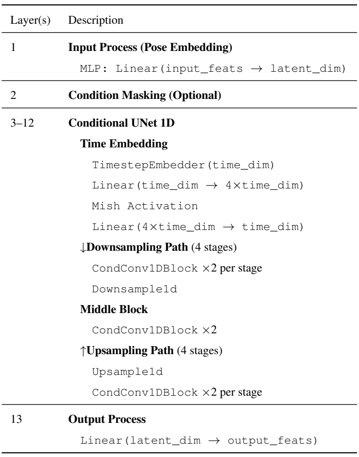
表格文字 / Table text (check against the image)
| Layer(s) | Description |
|---|---|
| 1 | Input Process (Pose Embedding) MLP: Linear(input_feats → latent_dim) |
| 2 | Condition Masking (Optional) |
| 3–12 | Conditional UNet 1D Time Embedding TimestepEmbedder(time_dim) Linear(time_dim → 4×time_dim) Mish Activation Linear(4×time_dim → time_dim) ↓Downsampling Path (4 stages) CondConv1DBlock ×2 per stage Downsample1d Middle Block CondConv1DBlock ×2 ↑Upsampling Path (4 stages) Upsample1d CondConv1DBlock ×2 per stage |
| 13 | Output Process Linear(latent_dim → output_feats) |
Appendix B: Hyper-parameters
Our diffusion model is implemented in PyTorch [PGM*19]. We utilized a consistent set of training hyper-parameters for both the Phase-Conditioned Motion Diffusion (Phase2Motion) and Text-Conditioned Phase Diffusion models (Text2Phase), as summarized in Table 7. For Phase2Motion network, the input motion clip length varies across datasets and is determined by their respective frame rates.
Appendix C: Effectiveness of the sliding loss
We further retrain the Phase2Motion model on HumanML3D without the sliding loss. As shown in Table 8, the sliding loss improves root trajectory accuracy, reduces accumulated root drift, and lowers foot contact error.
Appendix D: Phase Manifold Hyper-parameter Ablations
We add an ablation study on the HumanML3D dataset for three key design choices of the stylized phase manifold: codebook size, ambient manifold dimension, and style dimension. Although reconstruction loss is a useful reference metric, a lower value is not always strictly better in our framework. Near-perfect reconstruction tends to produce a more conventional latent space, where separating semantics from timing and enabling meaningful user edits becomes more difficult. Following prior disentanglement-oriented analysis such as WalkTheDog [LSYS24], we therefore also report codebook usage and style coverage, where high coverage indicates that user edits are more likely to remain within valid embeddings.
As shown in Table 9, we select a codebook size of 512 as a balance between reconstruction quality and codebook utilization. While increasing the style dimension improves reconstruction MSE, it substantially reduces style coverage, suggesting a less editable and less robust latent representation under style manipulation.
As shown in Tables 10 and 11, reconstruction performance saturates at an ambient manifold dimension of 128, motivating our default choice. Moreover, although larger style dimensions slightly improve reconstruction MSE, they substantially reduce style coverage, indicating reduced editability and robustness of the latent representation.

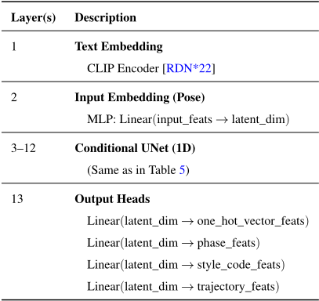
Recognized table text (check against the image)
| Layer(s) | Description |
|---|---|
| 1 | Text Embedding CLIP Encoder [RDN*22] |
| 2 | Input Embedding (Pose) MLP: Linear(input_feats → latent_dim) |
| 3-12 | Conditional UNet (1D) (Same as in Table 5) |
| 13 | Output Heads Linear(latent_dim → one_hot_vector_feats) Linear(latent_dim → phase_feats) Linear(latent_dim → style_code_feats) Linear(latent_dim → trajectory_feats) |

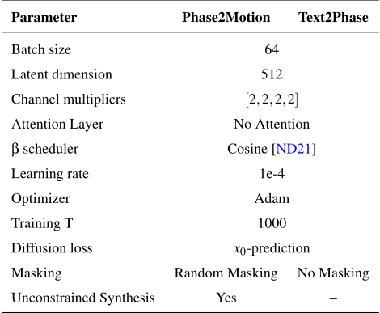
Recognized table text (check against the image)
| Parameter | Phase2Motion | Text2Phase |
|---|---|---|
| Batch size | 64 | |
| Latent dimension | 512 | |
| Channel multipliers | [2, 2, 2, 2] | |
| Attention Layer | No Attention | |
| β scheduler | Cosine [ND21] | |
| Learning rate | 1e-4 | |
| Optimizer | Adam | |
| Training T | 1000 | |
| Diffusion loss | x₀-prediction | |
| Masking | Random Masking | No Masking |
| Unconstrained Synthesis | Yes | - |

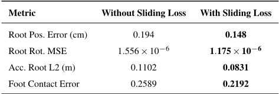
Recognized table text (check against the image)
| Metric | Without Sliding Loss | With Sliding Loss |
|---|---|---|
| Root Pos. Error (cm) | 0.194 | 0.148 |
| Root Rot. MSE | 1.556 × 10-6 | 1.175 × 10-6 |
| Acc. Root L2 (m) | 0.1102 | 0.0831 |
| Foot Contact Error | 0.2589 | 0.2192 |

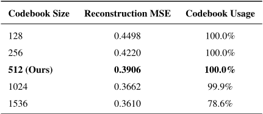
Recognized table text (check against the image)
| Codebook Size | ReconstructionMSE | Codebook Usage |
|---|---|---|
| 128 | 0.4498 | 100.0% |
| 256 | 0.4220 | 100.0% |
| 512 (Ours) | 0.3906 | 100.0% |
| 1024 | 0.3662 | 99.9% |
| 1536 | 0.3610 | 78.6% |

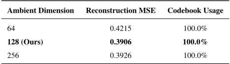
Recognized table text (check against the image)
| Ambient Dimension | ReconstructionMSE | Codebook Usage |
|---|---|---|
| 64 | 0.4215 | 100.0% |
| 128 (Ours) | 0.3906 | 100.0% |
| 256 | 0.3926 | 100.0% |

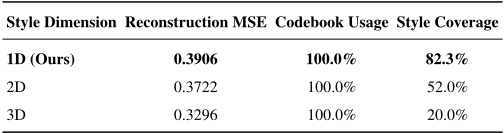
Recognized table text (check against the image)
| Style Dimension | ReconstructionMSE | Codebook Usage | Style Coverage |
|---|---|---|---|
| 1D (Ours) | 0.3906 | 100.0% | 82.3% |
| 2D | 0.3722 | 100.0% | 52.0% |
| 3D | 0.3296 | 100.0% | 20.0% |